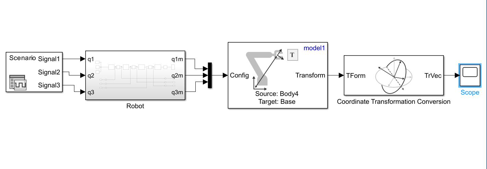

Developed and analyzed a basic 3-DOF robotic arm using inverse kinematics to determine the required joint angles for a desired end-effector position. Joint inputs were processed to obtain the corresponding end-effector position, while simulation scopes and sensors were used to monitor joint angular positions and motion responses. The results demonstrate the relationship between joint variables and end-effector movement.